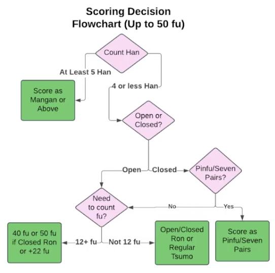

Riichi Mahjong Scoring
Table of Contents
Overview
Added 2025-11-23
Notes from Riichi Mahjong Scoring by StarPlaysMahjong.
Shibukawa Nanba of Sakura Knights made the methods in this video, which were translated by this person.
Memorizing the table is super tedious and intimidating. There are shorthands which make it easier.
Throwing three things away to start: pinfu/chiitoitsu, dealer scores, fu. You can learn a basic way without these and then fill in the gaps afterwards.
When you win with ron you say 1 number (what they pay), when you win with tsumo you say 2 numbers (nondealer/dealer). When the dealer tsumos everybody pays the high values.
Step 1: Hands Above Mangan
These are easy because they're only with han and don't deal with fu.
| han | ron | type | tsumo |
|---|---|---|---|
| 4-5 | mangan | 8000 | (2000-4000) |
| 6-7 | haneman | 12000 | (3000-6000) |
| 8-10 | baiman | 16000 | (4000-8000) |
| 11-12 | sanbaiman | 24000 | (6000-12000) |
| 13+ | yakuman | 32000 | (8000-16000) |
It starts at 8000 and goes up by 1.5x for each tier.
Step 2: Hands Below Mangan
Most of the time it follows this table:
| han | open | closed | tsumo |
|---|---|---|---|
| 1 | 1000 | 1300 | 300-500 |
| 2 | 2000 | 2600 | 500-1000 |
| 3 | 3900 | 5200 | 1000-2000 |
| 4 | mangan/7700 | mangan | 2000-4000 / mangan (2000-3900) |
39 is "san kyu" which sounds like "thank you".
This is a super simple flowchart. If above 4 han, use step 1 table. If below, check open/closed/tsumo and use the appropriate column.
Step 3: Honba / Riichi Sticks
Every time the dealer wins there's 300 points extra for ron per honba, 100 points extra for tsumo per honba (because there are three players other than the winner), 1 honba added every time there's a dealer win or draw. Honba reset if nondealer wins (draw doesn't reset).
Riichi sticks carry over from drawn games, increases score for winner but not included in point calculation (don't include those when you say the point value out loud, 4 han mangan is still 2000-4000 even with two riichi sticks).
Practice Hands
1: tanyao dora 1 2000 2: riichi ippeiko tsumo 1000-2000 (4000) 3: riichi tsumo aka 1 dora 3 haneman 3000-6000 (12000+300 honba) 4: riichi sanshoku 5200
Step 4: Pinfu
Pinfu has weird exceptions.
- Tsumo for pinfu is 1 han but way fewer points
- Closed ron bonus is negated, pinfu ron is the same as open ron
- Pinfu tsumo 4 han is not a mangan (!)
New table:
| han | pinfu ron | pinfu tsumo |
|---|---|---|
| 1 | 1000 | n/a |
| 2 | 2000 | 400-700 (total 1500) |
| 3 | 3900 | 700-1300 (total 2600) |
| 4 | mangan (7700) | 1300-2600 (total 5200) |
| 5 | mangan | mangan |
You see pinfu ron behaves as open even if closed.
Step 5: Chiitoitsu
| han | score |
|---|---|
| 1 | n/a |
| 2 | 1600 (400-800) |
| 3 | 3200 (800-1600) |
| 4 | 6400 (1600-3200) |
| 5 | mangan |
Everything nice and easily doubles. 4 han seven pairs is not mangan.
Step 6: Do It Again for Dealer
Above Mangan
Above mangan is just multiplied by 1.5, with everybody paying high value for tsumo.
| han | ron | type | tsumo |
|---|---|---|---|
| 4-5 | mangan | 12000 | 4000 all |
| 6-7 | haneman | 18000 | 6000 all |
| 8-10 | baiman | 24000 | 8000 all |
| 11-12 | sanbaiman | 36000 | 12000 all |
| 13+ | yakuman | 48000 | 16000 all |
Below Mangan
For tsumo, it's just the high value from non-dealer tsumo. For rons, it's mostly 1.5x nondealer with some annoying exceptions (2900 5800).
| han | 7 pairs ron | pinfu / open ron | closed ron |
|---|---|---|---|
| 1 | n/a | 1500 | 2000 |
| 2 | 2400 | 2900 | 3900 |
| 3 | 4800 | 5800 | 7700 |
| 4 | 9600 | mangan (11600) | mangan |
Dealer 3 han closed ron is always 7700.
This also produces an easy-ish flowchart.
Practice Hands 2
1: tanyao pinfu riichi tsumo
- nondealer: 1300-2600
- dealer: 2600 all
2: riichi chiitoitsu aka 1
- nondealer: 6400
- dealer: 9600
3: riichi ippeiko tanyao pinfu dora 2
- nondealer: haneman 12000
- dealer: haneman 18000
Step 7: Learning Fu
Hands start at 20 and gain for waits / groups / winning. Round to nearest 10 except for chiitoi which is fixed at 25. Closed ron is +10 fu so hands that are 30 get bumped to 40 (hence diff tables).
Basically:
- 20 fu is pinfu numbers
- 25 fu is chiitoi numbers
- 30 fu is open ron numbers
- 40 fu is closed ron / pinfu tsumo minus one han
- 50 fu is seven pairs numbers minus one han
General rule: 40+ fu you can add 1 han and divide fu by 2. For example, 2 han 50 fu = 3 han 25 fu (chiitoi 3 han). 40 fu is the same numbers as 20 fu (pinfu) but minus a han.
20 + group + wait + winning, round up to 10. The magic number is 12.
Group Fu
- Triplet gives 2 fu
- 2x if ankou
- 2x if terminal
- 4x if kan
- Yakuhai pair is 2 fu
Wait Fu
- Kanchan/penchan/tanki is 2 fu
- Shanpon doesn't give fu (already gives fu for triplet)
Winning Fu
- Tsumo is 2 fu
- Closed ron is 10 fu
- Open ron is 0 fu
When Do You Count Fu?
- A kan
- At least two triplets
- Closed terminal/honor triplet
Fu is only important if you get to 12 fu or higher.
Fu adding spots:
- Nothing - 30
- Closed ron - 40 (pinfu tsumo minus one han)
- +12 fu - 40
- Closed ron +12 fu - 50 (seven pairs minus one han)
- +22 fu - 50

Practice Hands 3
1: riichi tsumo (only +10 fu from 9 triplet tsumo)
- nondealer: 500-1000
- dealer: 1000 all
2: tsumo tanyao pinfu iipeiko
- nondealer: 1300-2600 (1600-2900 w/ honba)
- dealer: 2600 all (2900 all w/ honba)
3: tanyao dora 1
- fu: triplet 8 (2) closed kan 8 (16) kenchan wait (2) tsumo (2)
- +22 fu so 50 fu
- nondealer: 800-1600
- dealer: 1600 all
4: tanyao aka 1 dora 1
- fu: open kan 3 (8) kenchan wait (2) tsumo (2) = 12 fu
- 40 fu
- nondealer: 1300-2600
- dealer: 2600 all
I don't really feel like doing the rest of these practice problems I'm sure I'll get practice over time.
Practice Resources
Practice scoring: https://scoringtrainer.konbamwa.net/
Huge fu you should just pull out the table (lol) but you can memorize these too.